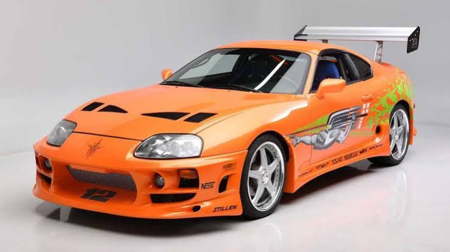

Estado del Proyecto
Este sitio web fue publicado exitosamente utilizando Vercel CLI.
El Toyota Supra es un automóvil deportivo de alto rendimiento de tipo gran turismo producido por la empresa japonesa Toyota a partir del año 1978. Su nombre deriva del latín y significa "superior" o "ir más allá", una filosofía que la marca plasmó en su mecánica al dotarlo históricamente con una configuración de motor delantero de seis cilindros en línea y tracción trasera. Esta combinación técnica no solo le otorgaba un equilibrio y un manejo sumamente dinámico en la pista, sino que también lo convirtió en el lienzo perfecto para los entusiastas de las modificaciones y el tuning. Con el paso de las décadas y a través de sus cinco generaciones, el vehículo dejó de ser simplemente un coche de carreras para transformarse en un auténtico ícono de la cultura pop mundial, ganando una fama legendaria por su durabilidad mecánica y por protagonizar sagas de cine como Rápido y Furioso y videojuegos icónicos de velocidad.
